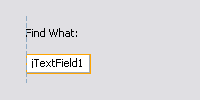
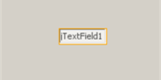
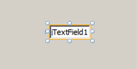

Apache NetBeans
Apache NetBeansLatest release
GUI 构建器可视反馈图例
| This tutorial needs a review. You can open a JIRA issue, or edit it in GitHub following these contribution guidelines. |
本文档介绍 IDE 的 GUI 构建器在处理 Java GUI 的创建期间提供的可视反馈（以前的代码名称为 Matisse）。
对齐基准线
只有当添加或移动组件时，才会出现对齐基准线，此基准线指示当松开鼠标按钮时组件将对齐的首选位置。定位后，对齐基准线将被实线和锚点指示符所取代，实线阐明组件之间共享的公共对齐位置。
| 插入量 |  |
插入量是组件以及组件所在的容器之间的首选间距。插入量是通过水平和垂直基准虚线来指示的。 |
|---|---|---|
偏移 |
|
偏移是相邻组件之间的首选间距。偏移是通过水平和垂直基准虚线来指示的。 |
基线 |
|
基线对齐是包含显示文本的相邻组件之间的首选关系。基线对齐是通过水平基准虚线来指示的。 |
边 |

|
边对齐（上、下、左、右）是相邻组件之间的可能的对齐关系。边对齐是通过水平和垂直基准虚线来指示的。 |
缩进 |
|
缩进对齐是一种特殊的对齐关系，其中一个组件位于另一个组件的下方并稍稍向右偏移。缩进对齐是通过两条垂直的基准虚线来指示的。 |
首选间距 |
|
首选间距（小、中、大）是相邻组件之间的间隙大小。首选间距是通过水平或垂直基准虚线来指示的。 |


锚点指示符
在组件对齐到位后，会出现实心锚点指示符，阐明组件之间共享的公共对齐位置。
| 容器 |  |
将各个组件连接到它们所在的容器的锚点由小的半圆指示符表示，这些指示符具有从容器边缘延伸到组件本身的虚线。 |
|---|---|---|
组件 |
|
将各个组件连接到相邻组件的锚点由小的半圆指示符表示，这些指示符具有从一个组件延伸到另一个组件的虚线。 |

大小调整指示符
相同大小 |
|
“相同大小”是一组组件（相邻或不相邻）均设置为具有相同宽度或高度的状态。“相同大小”由小的矩形指示符阐明，这些指示符显示在设置了该属性的每个组件的上边缘。 |
自动调整大小 |
|
“自动调整大小”是组件的宽度或高度设置为在运行时动态调整的状态。“自动调整大小”由 GUI 构建器工具栏中的水平调整大小按钮和垂直调整大小按钮（分别称为“更改水平大小可调性”和“更改垂直大小可调性”）的状态来指示。通过选择“属性”窗口的“其他属性”列表中的 |


突出显示和控柄
| 突出显示 |  | 橙色突出显示指明了选定组件将要放置的位置。 |
|---|---|---|
控柄 |
 |
选择了组件时，该组件周围会显示小方形大小调整控柄。单击、按住并拖动组件边缘的控柄可以调整该组件的大小。 |
另请参见
-
_使用 NetBeans IDE 开发应用程序_中的实现 Java GUI